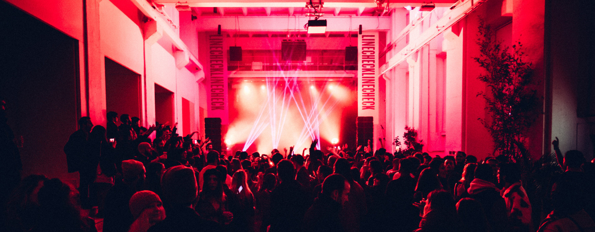

International Speaker · November 2023
Linecheck
Festival
8th edition · Milan — panel "Love in Sync"

About
Speaker at the eighth edition of Linecheck Festival in Milan — joining the music supervision panel "Love in Sync" to discuss the craft, sourcing songs for image, and the evolving sync ecosystem in Italy and abroad.